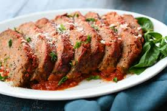

Meatloaf

----------------------------------------------------------------------------------
Description
This traditional meatloaf recipe made with sautéed vegetables, spices, and bread crumbs is moist and flavorful and topped with an old-fashioned glaze.
Cook time will depend on the size and shape of your loaf, as well as the type of baking pan you use. Serve this hearty meal on cool fall or winter evenings with mashed potatoes and a simple mushroom gravy.
----------------------------------------------------------------------------------
Ingredients
Meatloaf:
- ¾ cup milk
- ⅔ cup seasoned bread crumbs
- 2 large eggs
- 2 teaspoons dried minced onion
- 1 teaspoon salt
- ½ teaspoon rubbed sage
- 1 ½ pounds ground beef
- ½ cup sliced fresh mushrooms
Glaze:
- ¼ cup ketchup
- 2 tablespoons brown sugar
- 1 teaspoon ground mustard
- ½ teaspoon Worcestershire sauce
----------------------------------------------------------------------------------
Steps:
- Prepare meatloaf: Whisk together milk, bread crumbs, eggs, minced onion, salt, and sage in a large bowl.
- Stir in ground beef and mushrooms until well combined.
- Shape mixture into a round loaf. Place loaf into a 5-quart slow cooker.
- Cover and cook on Low until a meat thermometer reads 160 degrees F (71 degrees C), 5 to 6 hours.
- Prepare glaze: Whisk ketchup, brown sugar, mustard, and Worcestershire sauce in a small bowl.
- Open the slow cooker and spoon glaze over the meatloaf. Cover the cooker and continue to cook on Low until sauce is heated through, about 15 minutes.
- Carefully remove meatloaf with two spatulas to a serving plate. Cover with foil and let stand for 10 minutes before cutting.